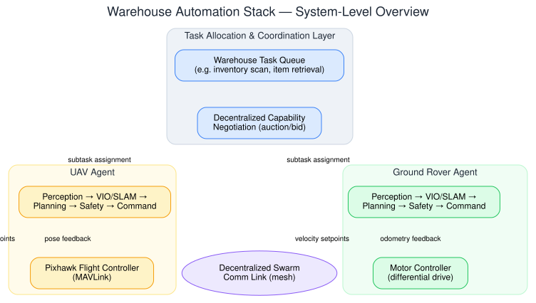
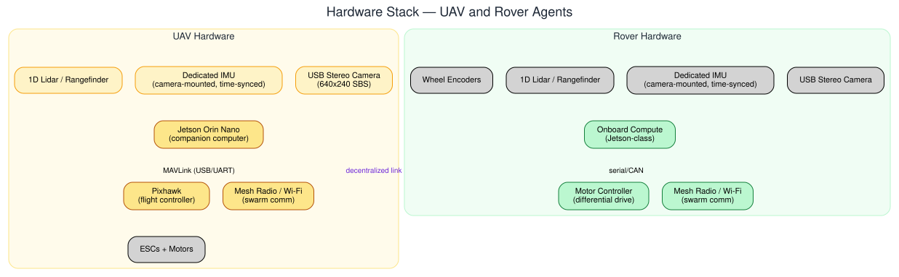
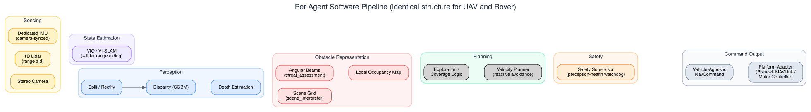
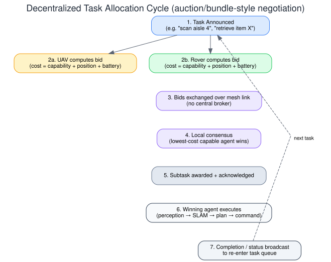
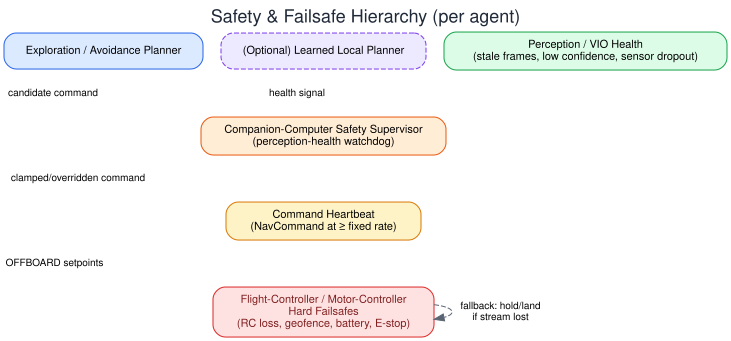
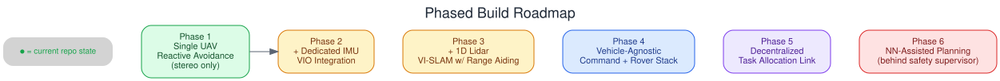

This document specifies the target architecture for a decentralized, two-agent autonomous system — one aerial (UAV) and one ground (rover) — collaborating on warehouse automation tasks such as inventory scanning and item retrieval. Both agents share an identical perception-to-command software pipeline built from stereo vision, a dedicated time-synced IMU, and a single-point (1D) lidar for range aiding, fused into a Visual-Inertial state estimate (VIO / VI-SLAM). Navigation is purely geometric — no onboard object detection/classification is used, by deliberate design, to preserve compute and power budget on the target edge-compute platform (NVIDIA Jetson Orin Nano) for higher-priority workloads.
The two agents coordinate without a central fleet manager: tasks are announced, bid on, and assigned through a decentralized, capability-aware negotiation protocol carried over a mesh communication link. Each agent's own safety supervisor has final authority over any command sent to its flight controller (Pixhawk) or motor controller — including commands eventually produced by a learned (NN-based) local planner, which is treated as an optional, sandboxed contributor rather than a trusted authority.
Most deployed warehouse robot fleets (e.g. Amazon Robotics, Locus Robotics, Berkshire Grey-class systems) use a centralized fleet manager directing a largely homogeneous ground fleet. This project targets a harder and more general problem: heterogeneous, decentralized coordination between an aerial agent and a ground agent, each with different capabilities, negotiating task ownership among themselves rather than being told what to do by a central broker.
| Capability | UAV | Ground Rover |
|---|---|---|
| Coverage speed | Fast, unobstructed by floor-level clutter and aisles | Slower, constrained to drivable floor space |
| Vantage point | Elevated / aerial view — good for wide-area scanning | Ground-level — good for under/behind-obstacle visibility |
| Payload | Limited (battery/lift constrained) | Higher payload capacity |
| Endurance | Shorter flight time | Longer operating duration |
| Position reliability | Drift-prone (inertial/visual only, no wheel reference) | More reliable (wheel odometry available as an additional reference) |
Because no single agent dominates on every axis, task allocation is genuinely a function of capability and current state (location, battery, current task), not a fixed rule — which is why the allocation mechanism (Section 6) is a negotiation, not a lookup table.
Example task cycle: a "scan aisle 4 and retrieve item X" task is announced on the shared task queue. The UAV, closer and with a clear flight path, bids to perform the aerial scan; the rover, positioned nearer the target shelf, bids to perform retrieval. Both subtasks execute concurrently, each agent running its own full perception-to-command loop independently.
At the top level, the system is two independent, structurally identical agent stacks, joined only by a thin coordination layer and a decentralized comm link. Neither agent depends on the other to perceive, localize, or avoid obstacles — coordination affects only which task an agent works on, never how it perceives or moves.


| Component | Role |
|---|---|
| USB stereo camera (640×240 side-by-side) | Primary geometric sensing — disparity/depth source |
| Dedicated IMU, rigidly mounted to camera, hardware/timestamp-synced | Inertial reference for VIO; deliberately separate from Pixhawk's own IMU so vision-inertial fusion isn't subject to MAVLink latency/jitter |
| 1D lidar / single-point rangefinder | Range-aiding input to VIO — corrects scale/altitude drift that stereo+IMU alone is prone to over featureless surfaces |
| NVIDIA Jetson Orin Nano | Companion computer — runs the entire perception/VIO/planning/safety pipeline |
| Pixhawk (PX4 or ArduPilot) | Flight controller — attitude/rate control, motor mixing, hard failsafes; receives velocity setpoints via MAVLink OFFBOARD mode |
| Mesh radio / Wi-Fi link | Decentralized swarm communication with the rover |
| Component | Role |
|---|---|
| USB stereo camera, dedicated synced IMU, 1D lidar | Same sensing suite as the UAV — identical perception/VIO pipeline reused without modification |
| Wheel encoders | Additional odometry reference unavailable to the UAV — improves rover pose reliability relative to the aerial agent |
| Onboard compute (Jetson-class) | Runs the same software stack as the UAV |
| Motor controller (differential drive) | Receives vehicle-agnostic velocity commands translated into wheel speeds |
| Mesh radio / Wi-Fi link | Decentralized swarm communication with the UAV |
Both agents run the identical pipeline below; only the final platform adapter differs (Pixhawk/MAVLink for the UAV, a differential-drive motor controller for the rover). This identical-pipeline property is what makes the stack reusable across agent types without duplicated logic.

Raw stereo frames, IMU samples, and 1D lidar range readings are acquired with consistent timestamping so that downstream fusion can associate the right samples with the right camera frame.
Stereo frames are split into left/right, rectified against calibration, and passed through SGBM-class stereo matching to produce a disparity map, then converted to metric depth.
IMU samples and stereo depth are fused into a pose estimate (position + heading) via Visual-Inertial Odometry, with the 1D lidar range reading fused in as a constraint that limits drift in scale/altitude. This pose estimate is what gives each agent a notion of "where am I relative to where I started" — something pure frame-by-frame depth cannot provide.
Depth is reduced to two redundant geometric views used for avoidance: an angular beam decomposition (near/far per direction) and a coarse region grid (clear / obstacle / low-confidence per zone). A local occupancy map, built from depth plus the VIO pose over a short time window, gives the planner short-horizon memory beyond a single frame.
Two cooperating planning concerns: exploration/coverage, which biases movement toward unexplored space using the local map and current pose, and reactive avoidance, which is the final authority on immediate obstacle clearance regardless of where exploration wants to go.
An independent watchdog, gated purely on perception/VIO health (stale frames, low confidence, sensor dropout) — never on pose or task state. It can override or clamp any candidate command, including one produced by an optional learned (NN) planner, before it is allowed to reach the command output stage. See Section 8 for the full failsafe hierarchy.
The planner's output is expressed as a vehicle-agnostic command (linear + angular velocity), not a drone- or rover-specific format. A thin platform adapter converts this into Pixhawk MAVLink OFFBOARD setpoints for the UAV, or differential-drive wheel speeds for the rover. This is the abstraction that lets the same upstream pipeline serve both agent types unmodified.
Task allocation uses a decentralized, auction/bundle-style negotiation (the same family as Consensus-Based Bundle Algorithm, CBBA) rather than a central broker: each agent computes its own cost to perform a given subtask from its current state and capability, bids are exchanged over the mesh link, and the lowest-cost capable agent wins — with no single point of failure or arbitration authority.

Each agent advertises a lightweight capability/cost function (e.g. distance to task, battery remaining, task-type affinity such as "aerial scan" vs. "ground retrieval") used by all agents to compute comparable bids without needing to share full internal state.
The mesh link is assumed intermittent, not guaranteed-reliable — the negotiation protocol and each agent's local fallback behavior must tolerate dropped or delayed bid messages without deadlocking the task queue.
Walking one task cycle end-to-end, combining Sections 5 and 6:
Safety is layered, with each layer independent of and unaware of the layers above it — a fault in planning or perception should never require the flight/motor controller's own hard failsafes to know why, only that the command stream has gone stale or out of bounds.

Following the standard PX4 OFFBOARD pattern, velocity setpoints must be streamed at a guaranteed minimum rate; if the stream stops (perception fault, software crash, comm loss), the flight/motor controller falls back to hold/land independent of any companion-computer logic.
Per the industry pattern described in Section 5.6, any learned/NN-based local planner is treated as one more candidate-command source feeding the safety supervisor — never as a trusted path directly to the command output stage. This is deliberate: it allows experimenting with learned planning without changing the safety guarantees of the system.
The table below maps every layer in this blueprint to its actual state in the depth_perception_engine codebase as of this document's writing.
| Layer | Status | Existing file(s) | Notes |
|---|---|---|---|
| Capture / split / rectify | Built & wired | stereo/frame_splitter.py, stereo/rectification.py | Single UAV camera path, in active use |
| Stereo matching (disparity) | Built & wired | stereo/disparity_engine.py | CPU SGBM; not yet validated/profiled on Orin Nano |
| Depth estimation | Built & wired | depth/depth_estimator.py, depth/distance_reader.py | — |
| Obstacle beams | Built & wired | fusion/threat_assessment.py | 20-beam angular decomposition |
| Scene grid | Built & wired | perception/scene_interpreter.py, region_analyzer.py, region_types.py | 3×3 region classification |
| Reactive velocity planner | Built & wired | navigation/velocity_planner.py | Outputs forward_mps / yaw_rate_dps today (drone-shaped, not yet vehicle-agnostic) |
| Telemetry / run logging | Built & wired | telemetry/run_logger.py | — |
| Visualization (debug) | Built & wired | visualization/overlay_renderer.py | Desk-test only, not flight-critical |
| Object detection (YOLO) | Removed | — | Old roadmap; deliberately excluded from current blueprint (compute budget reserved on Orin Nano). Unwired stub code (detection/yolo_detector.py, fusion/object_depth_fusion.py, fusion/region_classifier.py, yolov8n.pt) deleted during cleanup to scope the codebase to stereo perception only |
| Object tracking / detection manager | Removed | — | Empty stub files (detection/detection_manager.py, detection/object_tracker.py) deleted during cleanup |
| Dashboard / depth viewer | Removed | — | Empty stub files (visualization/dashboard.py, visualization/depth_viewer.py) deleted during cleanup |
| Dedicated IMU ingestion | Planned | — | Hardware not yet connected |
| VIO / VI-SLAM fusion | Planned | — | Depends on IMU ingestion |
| 1D lidar range fusion | Planned | — | Hardware not yet connected |
| Local occupancy map | Planned | — | Depends on VIO pose |
| Exploration/coverage logic | Planned | — | Depends on local map + pose |
| Vehicle-agnostic command schema | Planned | — | Current planner output is drone-shaped |
| Safety supervisor (formal module) | Partially implicit | main.py (stale-frame / too-close handling) | Logic exists inline in main.py; not yet a standalone, reusable module |
| Pixhawk MAVLink bridge | Planned | — | No FC integration exists yet; pipeline only logs/displays commands today |
| Rover stack | Planned | — | Not started; intended to reuse the UAV pipeline unmodified above the platform adapter |
| Decentralized task allocation | Planned | — | Not started |
Built & wired = in the active main.py loop today. Unwired = code exists but nothing imports it. Planned = blueprint only, no code yet.
| Concern | Approach / Candidate Tech | Rationale |
|---|---|---|
| Stereo matching | OpenCV SGBM (CPU today; CUDA SGBM candidate for Orin Nano) | Already implemented; CUDA port is the main open performance question for onboard deployment |
| VIO / VI-SLAM | Tightly-coupled stereo-inertial filter or optimization-based backend (e.g. an OpenVINS/VINS-Fusion-class approach), with 1D lidar fused as a range constraint | Avoids dependence on GPS or on Pixhawk's own drift-prone indoor dead reckoning |
| Command interface to flight controller | MAVLink OFFBOARD mode, vision pose pushed back via VISION_POSITION_ESTIMATE/ODOMETRY | Standard, well-tested pattern for vision-driven indoor PX4 flight |
| Task allocation | Decentralized auction/bundle negotiation (CBBA-family) | No single point of failure; matches the heterogeneous-capability requirement |
| Comm link | Mesh radio / Wi-Fi ad-hoc | Must tolerate intermittent connectivity without deadlocking task allocation |
| Onboard compute | NVIDIA Jetson Orin Nano | Compute/power budget is the reason object detection (YOLO) is excluded from this blueprint |
| Object detection / semantic labeling | Explicitly excluded | Reserves compute/power for VIO/SLAM and any future onboard NN planner |

detection/, fusion/object_depth_fusion.py, fusion/region_classifier.py, yolov8n.pt) has been removed from the codebase to keep it scoped to stereo perception only; revisit by reintroducing this work if the constraint changes.